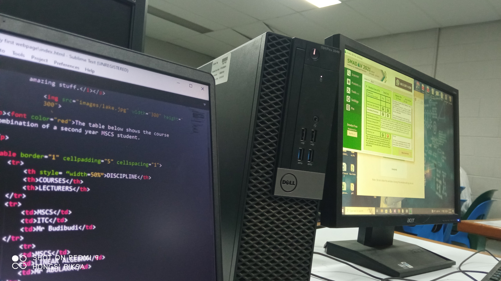

Mathematics, Statistics and Computer Science (MSCS) is a Discipline of its own in the School of Natural and Physical Sciences (SNPS) at the University of Papua New Guinea.
As the name of the discipline stands, the course deals with mathematics, statistics and computer science.
As a second year MSCS student, I am required to take four(4) courses; Calculus 1, Linear Algebra, Discrete Mathematics and Information and Comunication Concept (ICT).
All the four courses mentioned above belong to the MSCS Discipline.
Information Technology Concept (ITC) is the only course apart from the other three that deals with computer, the other three are mathematics courses. ITC mostly deals with introduction to computers; Introduction to computer hardwares and softwares, binary numbers, creation of webpages and many other amazing stuff.
Click here to find out more.
The table below shows the course combination of a second year MSCS student.
Name: Joe Aglum__ID Number: 20191365
| DISCIPLINE | COURSES | LECTURERS |
|---|---|---|
| MSCS | ITC | MR E BUDIBUDI |
| MSCS | LINEAR ALGEBRA | MR R ABULAKA |
| MSCS | CALCULUS 1 | MR J SILAS |
| MSCS | DISCRETE MATHEMATICS | MS ELINA LAKAMANGA |
Below is a brief description of the four courses mentioned above
Information Technology Concept (ITC) mostly deals with introduction to computer softwares and hardwares, introduction to networking, conversion of binary numbers, creation of webpages and many other fun stuff.
Mr Budibudi is the Lecturer that teaches the course. His office is located at Forum Square.
Linear Algebra deals with systems of linear equations, Matrices, Determinants, Vector Spaces and other fun topics as well.
The lecturer incharge of the course is Mr Abulaka. He is located in the MSCS Building, room 325
Calculus 1 is a tough course taken by Physics students, Chemistry students and MSCS students as well. The course deals with Functions, Limits and Continuity, Derivatives, Integration and applications of calculus in real life.
The Lecturer incharge of this course is Mr Silas. His office is located the the Kuri Dom Building, Room 335.
Discrete Mathematics is another fun course taken by MSCS and some Physics Students. It deals mainly with Logics, Elementary numbers and Theory, Relations, Set Theory FUnctions and other interesting topics as well.
The Lecturer incharge of Discrete Mathematics is Ms Lakamanga. She is Located in the MSCS Office, room 251.